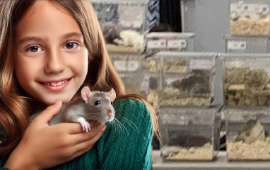

Trophies awarded at the Annual Cup Show
This page lists the trophies won at the 2025 Annual Cup Show. Certificates were printed and award labels affixed, but the presentation of awards will take place at the February 2026 show.
Mice trophies
| Trophy | Award | Exhibitor | Variety | Points |
|---|---|---|---|---|
| AOV Shield | Most points in 12 months with AOVs | WILLOW STUD | 356 | |
| Archie's Cup | Most points in 12 months for BOA. | WILLOW STUD | 4 | |
| Avalon Fox Cup | Best Fox | WILLOW STUD | Fox AB | |
| Baker Cup | *BIS | WILLOW STUD | Black AB | |
| Marked Cup | *BEST MKD | WILLOW STUD | Even AB | |
| Marked Shield | Most points in 12 months with Marked | WILLOW STUD | 156 | |
| Mice Points Cup | Most points at Club shows in 12 months | WILLOW STUD | 1466 | |
| Millennium Trophy (Mice) | Most points with firsts | WILLOW STUD | 836 | |
| Presidents Cup | *BIS | WILLOW STUD | Black AB | |
| Self Cup | *BEST SELF | WILLOW STUD | Black AB | |
| Self Shield | Most points in 12 months with Selfs | WILLOW STUD | 369 | |
| Tan Shield | Most points in 12 months with Tans | WILLOW STUD | 164 | |
| Team of Three Shield | Most points in 12 months. | WILLOW STUD | 18 | |
| Kingsley Cup | Best Type among first prize winners | R HOGG | Silver AD | |
| Orion Satin Trophy | *BEST SATIN | R HOGG | Silver Tan Satin AB | |
| Satin Cup | *BEST SATIN | R HOGG | Silver Tan Satin AB | |
| Albert Memorial Trophy | For Best AOV or Best Tan | J MULLAN | Agouti U8 | |
| Farrah Memorial Cup | *BOA | J MULLAN | Agouti U8 | |
| George Hall Cup | *BEST AOV | J MULLAN | Agouti U8 | |
| Tan Cup | *BEST TAN | P HOGG | Silver Tan U8 | |
| Juvenile Cup | For Best Junior | L&O BOOTH | Himalayan UD | |
| Sherwood Forest Cup | Best Blue | L&O BOOTH | Blue UD | |
| Supporters' Cup | Most points in Supporters' not having won any other trophy | A BOOTH | 68 | |
| Jubilee Cup | Most points in 12 months with two nominated breeds | T SALES | ||
| Rare Varieties Tankard | Most points in 12 months with RVs | T SALES | 33 |

Rat trophies
| Trophy | Award | Exhibitor | Variety | Points |
|---|---|---|---|---|
| Cyrano Shield | *BEST REX | - NO AWARD - | ||
| Xandos Cup | *BEST SIAMESE | - NO AWARD - | ||
| Millennium Trophy (Rats) | Most points with firsts | GEMINI | 292 | |
| Rat Points Cup | Most Points | GEMINI | 472 | |
| Belmont Cup-President's Trophy | *BOA | GINGERBREAD | Champagne KB | |
| Lisa Grove Shield | *BEST SELF | GINGERBREAD | Champagne KB | |
| Lord Morrison Trophy | For most points in 12 months - two for BIS and one for BOA. | RIVENDELL | 13 | |
| M&T Brinklow Cup | *BEST MARKED | RIVENDELL | Chinchilla AB | |
| P&R Quaid Trophy | *BEST AOV | RIVENDELL | Cream AB | |
| Saffron Trophy | *BEST AGOUTI OR CINNAMON | RIVENDELL | Agouti AD | |
| Scales Trophy | *RBIS | RIVENDELL | Silver Fawn AD | |
| Thamesgrove Trophy | *BIS | RIVENDELL | Cream AB | |
| Yulan Tankard | *BEST SILVER FAWN | RIVENDELL | Silver Fawn AD | |
| Xandos Shield | *BEST PET | SOPHIE LANGELLA | Adult Owned Buck Pet |